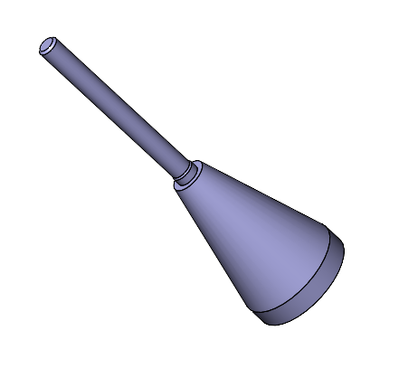
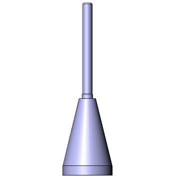
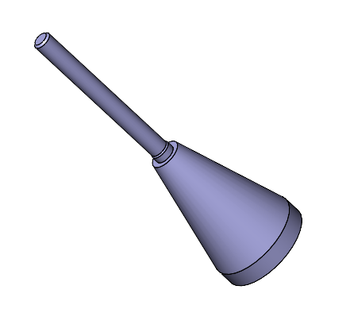
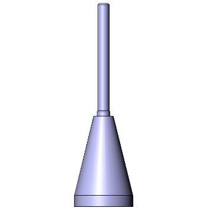

Approach
I was tasked with developing a fixture that would help center and bond two parts using a UV adhesive. With ideas of how this fixture would operate and function, I started sketching and designing the fixture in SOLIDWORKS.
The U-shaped snap-fits help quickly and easily secure one component in place whilst still allowing for rotation. An elevator approach was taken to help lift and secure one component into the curing area which was made out of UV filtering
acrylic. Each component was made from material that is clean room compatible for future use. Additionally, rubber feet were added to prevent slippage of the entire fixture.
Before the fixture, I would cure these components by hand using a single lightguide. However this would often produce inconsistent results. So, I tried:
- Increasing and decreasing cure time and intensity (cloudiness, uneven curing)
- Angling lightguides
- And lastly, increasing the number of lightguides by increments of one until I reached a more even cure - which is how I ended up with four lightguides.
A bonding mandrel was designed and created using SOLIDWORKS and FDM/SLA to help align the components with one another. This bonding mandrel was then sent out for machining!
Skills Employed
- SOLIDWORKS 3D CAD model and 2D drawings with tolerances
- Laser Cutting
- 3D Printing SLA and FDM
- Snap-fits design
- Working with screws and nuts, 80-20, Dymax UV Curing Box, drills
- Testing fixture design/mechanical testing
 


